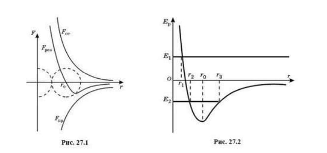

Силы взаимодействия молекул. Между молекулами в телах есть взаимодействие. Мы уже привели некоторые факты, доказывающие существование этих сил и то, что между молекулами одновременно действуют и силы отталкивания, и силы притяжения. На малых расстояниях преобладают силы отталкивания, а на больших силы притяжения, хотя действуют одновременно и те, и другие.
Силы межмолекулярного взаимодействия исследовал нидерландский физик Йоханнес Ван-дер-Ваальс (1837—1923), поэтому их часто называют ван-дер-ваатьсовыми силами . Очень трудно было исследовать природу и характер молекулярных сил, так как мало что было известно о самых атомах и молекулах. К началу XX в. ученые определили, что молекула и атом — это сложная система, состоящая из большого числа заряженных частиц: электронов и атомных ядер. І хотя в целом атом и молекула электрически нейтральны, между ними действуют значительные электрические силы. Описать, как взаимодействуют частицы внутри атомов, очень трудно. Это проблема атомной физики. В курсе физики для 10 классов мы ограничимся качественным описанием молекулярных сил.
Как оказалось, существует несколько видов межмолекулярных сил, и у каждого из них имеются свои особенности. Так, у молекул-диполей электрические силы зависят от ориентации диполя, и поэтому они называются ориентационными . Кроме ориентационных сил, существуют дисперсионные и индукционные силы. Необходимо отметить, что все три перечисленных вида сил притяження одинаковым образом убывают с расстоянием пропорционально 1/r7.
Для сил отталкивания характерны следующие особенности: 1) они очень быстро увеличиваются при уменьшении расстояния между молекулами или атомами; 2) зависят от индивидуальности каждой молекулы, а это трудно учесть и распространить на другие молекулы. Расчеты показали, что силы отталкивания возрастают при сближении молекул пропорционально 1/r9.
С учетом вышесказанного можно дать примерную зависимость молекулярных сил от расстояния и построить график этой зависимости (рис. 27.1). Из графика видно, что при > r, между молекулами преобладают силы притяжения, при г <r0 — силы отталкивання, а при r=r0, силы отталкивания и силы притяжения примерно равны, в точке r0, результирующая сила взаимодействия молекул обращается в нуль, а их потенциальная энергия имеет минимальное значение,
Потенциальная энергия взаимодействия. Расстояние r0(рис. 27.2) соответствует устойчивому положению равновесня атомов. Атомы совершают хаотические колебания вблизи точки r0. Сама потенциальная энергия молекул определяется расстоянием между ними, причем чем оно больше, тем большую работу будут совершать силы притяжения молекул, втягивающие их в "потенциальную яму". Поэтому потенциальная энергия молекул отрицательна.
Молекулы и атомы, находящиеся бесконечно далеко друг от друга, практически не взаимодействуют, следовательно, их потенциальная энергия равна нулю. Тогда при приближении молекул (уменьшении расстояния r между ними) потенциальная энергия будет уменьшаться, т. е. становиться отрицательной. Молекулы вещества как бы попадают "потеншальную яму". При дальнейшем сближении молекул (r<r0) появляются быстрорастущие силы отталкивания, и потенциальная энергия снова растет. Сами же атомы и молекулы вещества будут совершать колебательное движение в окрестностях r0. То есть график зависимости потенциальной энергии от расстояния между атомами или молекулами позволяет определить характер поведения частиц в теле, а соотношение кинетической и потенциальной энергии молекул в теле дает возможность определить агрегатное состояние вещества. Поэтому с единых позиций можно объяснить налічне агрегатных состояний вещества.
Строение газообразных, жидких и твердых тел. Попробуем объяснить тот факт, что вещество может находиться в трех агрегатных состояниях, используя молекулярно-кинетическую теорию строения вещества.
Газы.В газах расстояния между молекулами огромны и во много раз превышают размеры молекул. Потенциальная энергия взаимо-действия молекул очень мала — вомного раз меньше их кинетической энергии. Поэтому молекулы в газах легко перемещаются по всему объему. Сталкиваясь друг с другом, они постоянно изменяют направление своего перемещения. В газах царит и ближний, и дальний беспорядок, т. е. полный хаос. Сталкиваясь со стенками сосуда, в котором находится газ, молекулы передают им свой импульс. Возникает давление газа на стенки сосуда.
Газ не сохраняет ни объема, ни формы, так как слабые силы вза- имодействия не в состоянии удерживать молекулы друг возле друга.
Жидкости . Молекулы жидкості расположены Вплотнуо друг к другу. Они как бы зажаты молекулами-соседями. Сталкиваясь с ними, молекула совершает колебательное движение около положения равновесия. Тепловая энергия молекул в жидкости соизмерима с минимальной потенциальной энергией, которую обусловливают силы взаимодействия. Тепловое движение молекул расстраивает это расположение молекул. Рентгеноструктурный аналіз показал, что молекулы в жидкости располагаются группами по 10—12 штук. Силы взаимодействия между молекулами способны удерживать рядом друг с другом определенное количество молекул. обеспечивая ближний порядок . ІІзредка молекула может совершать "перескоки" из своей группы в другую, попав в которую, она будет продолжать совершать колебательное движение. Из-за "перескоков" молекул в жидкой фазе присутствует дальний беспорядок . С повышением температуры возрастает число "перескоков" молекул и уменьшается время их оседлой жизни". Про молекулы жидкости можно сказать, что они ведут полукочевой образ жизни". Молекулярное движение в жидкости было изучено советским физиком-теоретиком Я. И. Френкелем (1894-1952).
Так как молекулы жидкости плотно упакованы, то жидкости практически несжидаемы и поэтому хорошо передают давление. Все жидкости текучи, т. е. они не сохраняют форму, зато сохраняют обьем. Кинетическая энергия молекул жидкости соизмерима с их потенциальной энергией.
Съемки с частотой 10 млн. кадров в секунду установили, что жид- кость обладает хрупкостью , т. е. при падении на твердую поверхность капля жидкости раскалывается на осколки, которые сразу же собираются в более крупные капли.
Твердые тела.Силы взаимодействия между молекулами твердого тела так велики, что молекулы могут только колебаться около определенных положений, которые называются узали кристаллической решетки. Поэтому твердые тела сохраняют и форму, и объем. Про молекулы твердого тела говорят, что они образуют ближний и дальний порядки. Кристаллические решетки разных твердых тех различны, так как разшчны силы взаимодействия между молекулами и различно расположение самих молекул в телах.
Можно отметить следующие типы кристаллических решеток.
- Ионные , в узлах которых находятся положительные и отрица- тельные поны.
- Атомные , содержащие в узлах нейтральные атомы.
- Молекулярные , в узлах которых находятся молекулы.
- Металлические , в их узлах содержатся положительные ионы.
Если кристаллу не мешать расти, то внутренний порядок расположения атомов приводит к правильным геометрическим формам — образуются монокристаллы
В твердых телах кинетическая энергия молекул гораздо меньше их потенциальной энергии.